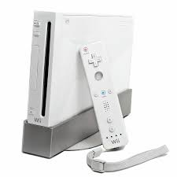
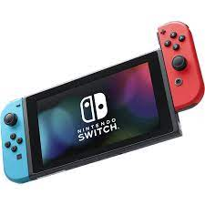

Nintendo Co., Ltd., con sede en Kioto, Japón, integra en sus productos hardware y software, y gracias a ellos ha creado franquicias reconocidas en todo el mundo, como Mario™, Donkey Kong™, The Legend of Zelda™, Metroid™, Pokémon™, Animal Crossing™, Pikmin™ y Splatoon™. El objetivo de Nintendo es proporcionar experiencias de entretenimiento intuitivas y únicas, creando y publicitando productos como las consolas de la familia Nintendo Switch™; desarrollando aplicaciones para dispositivos inteligentes; y colaborando con sus socios en una amplia variedad de iniciativas de entretenimiento, como contenido visual y parques temáticos. Nintendo ha vendido más de 5.1 millones de videojuegos y más de 800 millones de consolas en todo el mundo. Desde el lanzamiento de Nintendo Entertainment System™ hace ya más de 30 años, la misión de Nintendo ha sido y será crear entretenimiento único y genuino que haga sonreír a personas del mundo entero. Como empresa subsidiaria de Nintendo of Europe, Nintendo Ibérica S.A., con sede en Madrid, actúa como sede central de operaciones de Nintendo en España y Portugal. Nintendo of Europe, con sede en Frankfurt, Alemania, como empresa subsidiaria de Nintendo Co., Ltd., actúa como sede central de operaciones de Nintendo en Europa.
| NINTENDO WII | NINTENDO SWITCH |
|---|---|
|  |  |
| Memoria de 32GB, de los cuales es de esperar que el usuario pueda utilizar un porcentaje menor al haber actualizaciones de firmware de por medio más el peso del sistema operativo. Por suerte, la memoria de Switch se puede ampliar mediante el uso de tarjetas MicroSDXC de hasta 256GB o discos externos. | Wii U, por otro lado, se vende en dos modelos: uno con 8GB, que podríamos llamar Modelo Básico; mientras que por otro tenemos el modelo de 32GB. En ambos casos se pueden utilizar tarjetas MiniSD o discos de unidad externa. |
| Estaríamos hablando de un procesador de 4 núcleos ARM Cortex A57 con un máximo de 2GHz de velocidad. La GPU, que como decíamos la provee Nvidia, es de 256 núcleos CUDA a un máximo de 1GHz, todo ello bajo un motor basado en arquitectura Maxwell de segunda generación. Se trata de un Tegra X1 Custom, modificado para sacar el máximo partido del software de Nintendo y facilitando la adaptación de videojuegos ya existentes de terceras compañías. La RAM es de 4GB con un ancho de memoria de banda de 25.6 GB/s y VRAM compartida, algo que debería permitir tiempos de carga ínfimos entre transiciones de menú si se aprovecha bien el sistema operativo. En esos 32 GB de almacenamiento de Switch tenemos un máximo de transferencia de datos de 400 MB/s. | Wii U cuenta con una CPU de 3 núcleos alcanzando potencias de 0.35 Teraflops (Switch rondaría los 0.8 – 1.0 Teraflops). La memoria de Wii U sale perdiendo en esta comparativa al ser de 2GB y utilizar USB 2.0, provocando que las transferencias de datos sean infinitamente más lentas. |
| Estamos hablando de un panel IPS LCD HD con resolución 1280x720p, lo cual nos da una total de 236ppi al ser un panel de 6.2 pulgadas. | Si lo comparamos con el Wii U GamePad, que contaba con una pantalla de este mismo tamaño pero con resolución menor (854x480p), Nintendo Switch gana por goleada en la calidad de la pantalla: 236ppi (Switch) vs 158ppi (Wii U). |
| Nintendo Switch se pondrá a la venta el próximo 3 de marzo con lanzamiento mundial a un precio que se ha estimado en 329 euros, impuestos includios, en los principales países que comparten el euro; España está incluida. Según ha anunciado la compañía nipona, solo estará disponible el modelo de 32GB de almacenamiento, pero como decimos se podrá ampliar con tarjetas MicroSD de hasta 256GB (los precios actuales de tarjetas Class10 MicroSDXC son de unos 43 euros por 128; unos 85 euros por 256 GB). | Si nos fijamos en Wii U, su lanzamiento se remonta a finales de 2012 y tuvimos dos opciones: la primera era con 8GB por 299 euros; el modelo Premium, que es el que continúa en el mercado a fecha de enero de 2017, cuenta con 32GB y costó 349 euros de salida con un juego (Nintendo Land); ahora se puede encontrar por 299 euros con obras como Mario Kart 8 includo. |